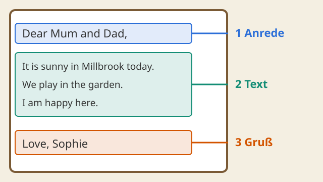

Liebe Grüße aus Millbrook: E-Mail und Postkarte
Mit einem KI-Tutor lernen
Ein KI-Tutor erklärt dir diese Seite und hilft dir bei den Aufgaben. Wähl deinen Assistenten:
Mit Claude öffnen Mit ChatGPT öffnen Mit Mistral Vibe öffnen
Du nutzt dein eigenes Konto beim Anbieter. Der Assistent ist kein Angebot von lernapps.net: lernapps liefert nur Inhalte und Aufgaben. Die Wahl gilt für alle Seiten, nur auf diesem Gerät.
Sophie schreibt nach Hause

Sophies Postkarte an ihre Eltern, geteilt in drei Teile.
Quelle: eigene Zeichnung. Lizenz: CC-BY-4.0.Amir hat Sophies Zusage bekommen. Jetzt schreibt Sophie ihren Eltern eine Postkarte (postcard) und erzählt von Millbrook. Auch eine Karte hat einen Bauplan.
Aufgabe
Lösung
Love, Sophie richtige Antwort
Der dritte Teil ist der Gruß mit Namen.
Dear Mum and Dad,
Das ist die Anrede am Anfang.
Mum and Dad
So heißen die Menschen, an die die Karte geht. Ein Gruß ist das nicht.
Am Ende steht der Gruß mit dem Namen der Schreiberin.
Mehr dazu: Lernlandkarte Englisch · E-Mail, Brief und Postkarte
Das kannst du danach: Du schreibst eine Postkarte oder E-Mail mit passender Anrede und passendem Gruß.
Anrede, Text und Gruß
Der Bauplan hat drei Teile. Die Anrede beginnt mit Dear (liebe/lieber) oder bei Freunden mit Hi, danach kommen der Name und ein Komma. Der Text sind ganze Sätze: Wie ist das Wetter (sunny, rainy, cold)? Was machst du? Wie geht es dir (tired but happy)? Der Gruß steht zuletzt, mit Komma und deinem Namen.
| An wen? | Anrede | Gruß |
|---|---|---|
| Familie | Dear Mum, | Love, / Write soon, |
| Freunde | Hi Ellie, / Dear Ellie, | See you soon, / Love, |
| Erwachsene (nicht Familie) | Dear Mrs Parker, | Best wishes, |
Love, heißt liebe Grüße, See you soon, bis bald, Write soon, schreib bald. Best wishes, (herzliche Grüße) ist freundlich, aber ein Stück weiter weg: Das schreibst du an Erwachsene, die nicht zu deiner Familie gehören. Yours ist für offizielle Briefe, nicht für die Familie. Eine E-Mail hat zusätzlich eine Zeile Subject (Betreff) mit wenigen Wörtern. Eine Postkarte hat keine.
Merke
Anrede: Dear oder Hi + Name + Komma. Gruß: Love, / See you soon, / Write soon, an Familie und Freunde, Best wishes, an andere Erwachsene, dann dein Name. Für Familie: nie Yours. Für Erwachsene: nicht Hi.
| Ausdruck | Bedeutung |
|---|---|
| postcard | Postkarte |
| best wishes | herzliche Grüße |
| subject | Betreff |
| cold (hier: kalt) | kalt. Nicht: a cold, die Erkältung. |
Übung
Aufgabe
Schreibe die Zeile mit Komma. Hinter dem Gruß steht kein Punkt.
Tipp
Anrede und Gruß haben ein Komma.
- Sophie schreibt ihrem Lehrer Mr Hill. Schreibe die Anrede.
- Sophie schreibt Mr Hill und beendet den Brief. Schreibe den Gruß mit ihrem Namen.
- Amir schreibt an einen Freund. Gruß: See you soon · Amir
Lösung
- Dear Mr. Hill, (auch richtig: Dear Mr Hill,)
- Best wishes, Sophie
- See you soon, Amir
Aufgabe
In jeder Zeile steckt ein Fehler. Schreibe die Zeile richtig.
Tipp
Zu wem passt die Zeile?
- Ellie schreibt an ihre Grandma. Gruß: Yours, Ellie
- Amir schreibt an Mr Parker, den Vater von Ellie. Anrede: Hi Mr Parker,
- Peter schreibt an seine Mum. Anrede: Dear Mum
Lösung
- Love, Ellie (auch richtig: Write soon, Ellie; See you soon, Ellie)
- Dear Mr. Parker, (auch richtig: Dear Mr Parker,)
- Dear Mum, (auch richtig: Hi Mum,)
Aufgabe
Schreibe den Satz auf Englisch.
Tipp
Beginne mit it oder I.
- Heute ist es kalt.
- Ich gehe mit Peter in den Park.
- Mir geht es gut.
Lösung
- Today it is very cold today. (auch richtig: Today it is very cold.; Today it is cold today.; Today it is cold.; Today it's very cold today.; Today it's very cold.; Today it's cold today.; Today it's cold.; It is very cold today.; It is very cold.; It is cold today.; It is cold.; It's very cold today.; It's very cold.; It's cold today.; It's cold.)
- I go to the park with Peter. (auch richtig: I go to the park.; I walk to the park with Peter.; I walk to the park.; I go with Peter to the park with Peter.; I go with Peter to the park.; I walk with Peter to the park with Peter.; I walk with Peter to the park.)
- I'm fine. (auch richtig: I'm well.; I'm good.; I'm happy.; I'm OK.; I'm okay.; I'm great.; I am fine.; I am well.; I am good.; I am happy.; I am OK.; I am okay.; I am great.; I feel fine.; I feel well.; I feel good.; I feel happy.; I feel OK.; I feel okay.; I feel great.)
Aufgabe
Lösung
Homework for Monday richtige Antwort
Der Betreff sagt in wenigen Wörtern, worum es geht.
Dear Mr Hill,
Das ist die Anrede, sie steht im Text.
Best wishes, Sophie
Das ist der Gruß am Ende.
Der Betreff nennt kurz das Thema.
Mehr dazu: Lernlandkarte Englisch · E-Mail, Brief und Postkarte
Aufgabe
Hör zu und schreibe, was du hörst.
- KI
- KI
- KI
Lösung
- Today we walk to the shop with Peter.
- Our teacher is friendly and funny.
- It is rainy, so we read books with Amir.
Selbst sagen und schreiben
Aufgabe
Hör zu, sprich nach und nimm dich auf. Vergleiche dann mit dem Original.
Tipp
Hör den Satz zuerst. Sprich dann langsam nach.
- Thank you for your lovely postcard.KI
- We play football in the park with Amir.KI
- Please write to me again.KI
Zum Aufnehmen braucht diese Aufgabe JavaScript. Die Beispiele kannst du auch ohne anhören.
Lösung
- Thank you for your lovely postcard.
- We play football in the park with Amir.
- Please write to me again.
Offene Aufgabe
Schreibe eine Postkarte oder eine kurze E-Mail in dein Heft, an eine Person deiner Wahl: an einen Menschen aus deiner Familie, an eine Freundin, einen Freund oder an einen Erwachsenen. Schreibe drei bis fünf Sätze Text. Die App bewertet deinen Text nicht: Vergleiche ihn danach selbst mit den Punkten.
Eine gute Antwort enthält:
- Die Karte beginnt mit Dear oder Hi, dem Namen und einem Komma, passend zur Person. Nachlesen
- Der Text sagt etwas über das Wetter, über das, was du machst, und darüber, wie es dir geht. Nachlesen
- Der Gruß passt zur Person (Love, oder Best wishes,) und steht mit Komma vor deinem Namen. Nachlesen
- Es sind ganze Sätze mit einem Punkt am Ende. (Form)
Lösung
Dear Grandma, It is sunny today. I play in the garden with my cousin. I am happy. Love, Anna
Oder: Dear Mrs Green, It is rainy, but I am fine. I read a book at home. I am happy. Best wishes, Tom
Dein Profil und ein Rückblick
| Zeile | Englisch |
|---|---|
| Familie | I live with my mum, my dad and my brother. |
| Mein Lieblingsplatz | My favourite place is my room. It is quiet. |
| Gefühle | I feel happy. |
| Wenn mir etwas wehtut | I've got a headache. My ear hurts. |
| Zuhause | I live in a house with a garden. |
| Mein Tag | I get up at seven o'clock. |
| Essen | I usually have cereal with milk and orange juice. |
| Alltag | We have tea at six o'clock. |
| Hobbys | I like swimming and I play the guitar. |
| Einladung | Come to the cinema with me on Friday at seven. |
Sophie wirft ihre Karte in den Briefkasten und schreibt ihren Eltern noch: „Hier ist es schön, und am Samstag feiern wir bei Amir!“ Übertrage deine Zeilen in dein Heft: Die App speichert nichts. Du kannst jetzt von deinem Alltag auf Englisch erzählen. Prüfe dich in der Selbsteinschätzung dieses Kapitels.